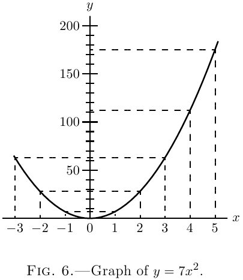
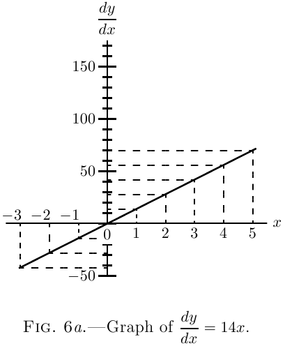

In our equations we have regarded $x$ as growing, and as a result of $x$ being made to grow $y$ also changed its value and grew. We usually think of $x$ as a quantity that we can vary; and, regarding the variation of $x$ as a sort of cause, we consider the resulting variation of $y$ as an effect. In other words, we regard the value of $y$ as depending on that of $x$. Both $x$ and $y$ are variables, but $x$ is the one that we operate upon, and $y$ is the “dependent variable.” In all the preceding chapter we have been trying to find out rules for the proportion which the dependent variation in $y$ bears to the variation independently made in $x$.
Our next step is to find out what effect on the process of differentiating is caused by the presence of constants, that is, of numbers which don't change when $x$ or $y$ change their values.
Added Constants.
Let us begin with some simple case of an added constant, thus: Let \begin{align*} y=x^3+5. \end{align*} Just as before, let us suppose $x$ to grow to $x+dx$ and $y$ to grow to $y+dy$. \begin{align*} \text{Then:}\; y + dy &= (x + dx)^3 + 5 \\ &= x^3 + 3x^2\, dx + 3x(dx)^2 + (dx)^3 + 5. \end{align*} Neglecting the small quantities of higher orders, this becomes \begin{align*} y + dy &= x^3 + 3x^2·dx + 5. \\ \end{align*} Subtract the original $y = x^3 + 5$, and we have left: \begin{align*} dy &= 3x^2\, dx. \\ \frac{dy}{dx} &= 3x^2. \end{align*}
So the $5$ has quite disappeared. It added nothing to the growth of $x$, and does not enter into the differential coefficient. If we had put $7$, or $700$, or any other number, instead of $5$, it would have disappeared. So if we take the letter $a$, or $b$, or $c$ to represent any constant, it will simply disappear when we differentiate.
If the additional constant had been of negative value, such as $-5$ or $-b$, it would equally have disappeared.
Multiplied Constants.
Take as a simple experiment this case:
Let $y = 7x^2$. Then on proceeding as before we get: \begin{align*} y + dy &= 7(x+dx)^2 \\ &= 7\{x^2 + 2x·dx + (dx)^2\} \\ &= 7x^2 + 14x·dx + 7(dx)^2. \\ \end{align*} Then, subtracting the original $y = 7x^2$, and neglecting the last term, we have \begin{align*} dy &= 14x·dx.\\ \frac{dy}{dx} &= 14x. \end{align*}
Let us illustrate this example by working out the graphs of the equations $y = 7x^2$ and $\dfrac{dy}{dx} = 14x$, by assigning to $x$ a set of successive values, $0$, $1$, $2$, $3$, etc., and finding the corresponding values of $y$ and of $\dfrac{dy}{dx}$.
These values we tabulate as follows:
| $x$ | $0 $ | $1 $ | $2 $ | $3 $ | $4 $ | $5 $ | $-1 $ | $ -2 $ | $ -3 |
| $y$ | $0 $ | $7 $ | $28 $ | $63 $ | $112 $ | $175 $ | $7 $ | $ 28$ | $ 63 |
| $\dfrac{dy}{dx}$ | $0 $ | $14 $ | $28 $ | $42 $ | $56 $ | $70 $ | $-14$ | $ -28$ | $ -42 |

Now plot these values to some convenient scale,
and we obtain the two curves, Fig. 6 and Fig. 6a.

Carefully compare the two figures, and verify by
inspection that the height of the ordinate of the
derived curve, Fig. 6a, is proportional to the slope of
the original curve, (See here about slopes of curves.)
Figure 6, at the corresponding value
of $x$. To the left of the origin, where the original
curve slopes negatively (that is, downward from left
to right) the corresponding ordinates of the derived
curve are negative.
Now if we look back at here, we shall see that
simply differentiating $x^2$ gives us $2x$. So that the
differential coefficient of $7x^2$ is just $7$ times as big as
that of $x^2$. If we had taken $8x^2$, the differential
coefficient would have come out eight times as great
as that of $x^2$. If we put $y = ax^2$, we shall get
\[
\frac{dy}{dx} = a × 2x.
\]
If we had begun with $y = ax^n$, we should have had
$\dfrac{dy}{dx} = a×nx^{n-1}$. So that any mere multiplication by
a constant reappears as a mere multiplication when
the thing is differentiated. And, what is true about
multiplication is equally true about division: for if,
in the example above, we had taken as the constant $\frac{1}{7}$
instead of $7$, we should have had the same $\frac{1}{7}$ come
out in the result after differentiation.
Some Further Examples.
The following further examples, fully worked out,
will enable you to master completely the process of
differentiation as applied to ordinary algebraical expressions,
and enable you to work out by yourself the
examples given at the end of this chapter.
(1) Differentiate $y = \dfrac{x^5}{7} - \dfrac{3}{5}$.
$\dfrac{3}{5}$ is an added constant and vanishes (see here).
We may then write at once
\[
\frac{dy}{dx} = \frac{1}{7} × 5 × x^{5-1}, \\
\text{or}\;
\frac{dy}{dx} = \frac{5}{7} x^4.
\]
(2) Differentiate $y = a\sqrt{x} - \dfrac{1}{2}\sqrt{a}$.
The term $\dfrac{1}{2}\sqrt{a}$ vanishes, being an added constant;
and as $a\sqrt{x}$, in the index form, is written $ax^{\frac{1}{2}}$, we
have
\[
\frac{dy}{dx}
= a × \frac{1}{2} × x^{\frac{1}{2}-1}
= \frac{a}{2} × x^{-\frac{1}{2}}, \\
\text{or}\;
\frac{dy}{dx} = \frac{a}{2\sqrt{x}}.
\]
(3) If $ay + bx = by - ax + (x+y)\sqrt{a^2 - b^2}$,
find the differential coefficient of $y$ with respect to $x$.
As a rule an expression of this kind will need a
little more knowledge than we have acquired so far;
it is, however, always worth while to try whether the
expression can be put in a simpler form.
First we must try to bring it into the form $y = {}$ some
expression involving $x$ only.
The expression may be written
\[
(a-b)y + (a + b)x = (x+y) \sqrt{a^2 - b^2}.
\]
Squaring, we get
\[
(a-b)^2 y^2 + (a + b)^2 x^2 + 2(a+b)(a-b)xy = (x^2+y^2+2xy)(a^2-b^2),
\]
which simplifies to
\begin{align*}
(a-b)^2y^2 + (a+b)^2 x^2 &= x^2(a^2 - b^2) + y^2(a^2 - b^2); \\
\text{ or}\;
[(a-b)^2 - (a^2 - b^2)]y^2 &= [(a^2 - b^2) - (a+b)^2]x^2, \\
\text{ that is}\;
2b(b-a)y^2 &= -2b(b+a)x^2;
\end{align*}
hence
\[
y = \sqrt{\frac{a+b}{a-b}} x \quad\text{and}\quad \frac{dy}{dx} = \sqrt{\frac{a+b}{a-b}}.
\]
(4) The volume of a cylinder of radius $r$ and height $h$
is given by the formula $V = \pi r^2 h$. Find the rate of
variation of volume with the radius when $r = 5.5$ in.
and $h=20$ in. If $r = h$, find the dimensions of the
cylinder so that a change of $1$ in. in radius causes a
change of $400$ cub. in. in the volume.
The rate of variation of $V$ with regard to $r$ is
\[
\frac{dV}{dr} = 2 \pi r h.
\]
If $r = 5.5$ in. and $h=20$ in. this becomes $690.8$. It
means that a change of radius of $1$ inch will cause a
change of volume of $690.8$ cub. inch. This can be
easily verified, for the volumes with $r = 5$ and $r = 6$
are $1570$ cub. in. and $2260.8$ cub. in. respectively, and
$2260.8 - 1570 = 690.8$.
Also, if
\[
r=h,\quad \dfrac{dV}{dr} = 2\pi r^2 = 400\quad \text{and}\quad r = h = \sqrt{\dfrac{400}{2\pi}} = 7.98 \text{in}.
\]
(5) The reading $\theta$ of a Féry's Radiation pyrometer
is related to the Centigrade temperature $t$ of the
observed body by the relation
\[
\dfrac{\theta}{\theta_1} = \left(\dfrac{t}{t_1}\right)^4,
\]
where $\theta_1$ is the reading corresponding to a known temperature $t_1$
of the observed body.
Compare the sensitiveness of the pyrometer at
temperatures $800°$C., $1000°$C., $1200°$C., given that it
read $25$ when the temperature was $1000°$C.
The sensitiveness is the rate of variation of the
reading with the temperature, that is $\dfrac{d\theta}{dt}$. The formula
may be written
\[
\theta = \dfrac{\theta_1}{t_1^4} t^4 = \dfrac{25t^4}{1000^4},
\]
and we have
\[
\dfrac{d\theta}{dt} = \dfrac{100t^3}{1000^4} = \dfrac{t^3}{10,000,000,000}.
\]
When $t=800$, $1000$ and $1200$, we get $\dfrac{d\theta}{dt} = 0.0512$, $0.1$ and
$0.1728$ respectively.
The sensitiveness is approximately doubled from
$800°$ to $1000°$, and becomes three-quarters as great
again up to $1200°$.
Differentiate the following:
[2]
(1) $y = ax^3 + 6$.
(2) $y = 13x^{\frac{3}{2}} - c$.
(3) $y = 12x^{\frac{1}{2}} + c^{\frac{1}{2}}$.
(4) $y = c^{\frac{1}{2}} x^{\frac{1}{2}}$.
(5) $u = \dfrac{az^n - 1}{c}$.
(6) $y = 1.18t^2 + 22.4$.
Make up some other examples for yourself, and try
your hand at differentiating them.
(7) If $l_t$ and $l_0$ be the lengths of a rod of iron at
the temperatures $t°$ C. and $0°$ C. respectively, then
$l_t = l_0(1 + 0.000012t)$. Find the change of length of the
rod per degree Centigrade.
(8) It has been found that if $c$ be the candle power
of an incandescent electric lamp, and $V$ be the voltage,
$c = aV^b$, where $a$ and $b$ are constants.
Find the rate of change of the candle power with
the voltage, and calculate the change of candle power
per volt at $80$, $100$ and $120$ volts in the case of a lamp
for which $a = 0.5×10^{-10}$ and $b=6$.
(9) The frequency $n$ of vibration of a string of
diameter $D$, length $L$ and specific gravity $\sigma$, stretched
with a force $T$, is given by
\[
n = \dfrac{1}{DL} \sqrt{\dfrac{gT}{\pi\sigma}}.
\]
Find the rate of change of the frequency when $D$, $L$,
$\sigma$ and $T$ are varied singly.
(10) The greatest external pressure $P$ which a tube
can support without collapsing is given by
\[
P = \left(\dfrac{2E}{1-\sigma^2}\right) \dfrac{t^3}{D^3},
\]
where $E$ and $\sigma$ are constants, $t$ is the thickness of the
tube and $D$ is its diameter. (This formula assumes
that $4t$ is small compared to $D$.)
Compare the rate at which $P$ varies for a small
change of thickness and for a small change of diameter
taking place separately.
(11) Find, from first principles, the rate at which
the following vary with respect to a change in
radius:
(a ) - the circumference of a circle of radius $r$;
(b ) - the area of a circle of radius $r$;
(c ) - the lateral area of a cone of slant dimension $l$;
(d ) - the volume of a cone of radius $r$ and height $h$;
(e ) - the area of a sphere of radius $r$;
(f ) - the volume of a sphere of radius $r$.
(12) The length $L$ of an iron rod at the temperature $T$
being given by $L = l_t\bigl[1 + 0.000012(T-t)\bigr]$, where $l_t$
is the length at the temperature $t$, find the rate of
variation of the diameter $D$ of an iron tyre suitable
for being shrunk on a wheel, when the temperature $T$
varies.
(1) $\dfrac{dy}{dx} = 3ax^2$.
(2) $\dfrac{dy}{dx} = 13 × \frac{3}{2}x^{\frac{1}{2}}$.
(3) $\dfrac{dy}{dx} = 6x^{-\frac{1}{2}}$.
(4) $\dfrac{dy}{dx} = \dfrac{1}{2}c^{\frac{1}{2}} x^{-\frac{1}{2}}$.
(5) $\dfrac{du}{dz} = \dfrac{an}{c} z^{n-1}$.
(6) $\dfrac{dy}{dt} = 2.36t$.
(7) $\dfrac{dl_t}{dt} = 0.000012×l_0$.
(8) $\dfrac{dC}{dV} = abV^{b-1}$, $0.98$, $3.00$ and $7.47$ candle power per volt respectively.
(9) \[
\dfrac{dn}{dD} = -\dfrac{1}{LD^2} \sqrt{\dfrac{gT}{\pi \sigma}},
\dfrac{dn}{dL} = -\dfrac{1}{DL^2} \sqrt{\dfrac{gT}{\pi \sigma}}, \\
\dfrac{dn}{d \sigma}
= -\dfrac{1}{2DL} \sqrt{\dfrac{gT}{\pi \sigma^3}},
\dfrac{dn}{dT} = \dfrac{1}{2DL} \sqrt{\dfrac{g}{\pi \sigma T}}.
\]
(10) \[
\dfrac{\text{Rate of change of $P$ when $t$ varies}}
{\text{Rate of change of $P$ when $D$ varies}}
= - \dfrac{D}{t}
\]
(11) $2\pi$, $2\pi r$, $\pi l$, $\frac{2}{3}\pi rh$, $8\pi r$, $4\pi r^2$.
(12) $\dfrac{dD}{dT} = \dfrac{0.000012l_t}{\pi}$.
Exercises II
Answers
Next →
Main Page ↑